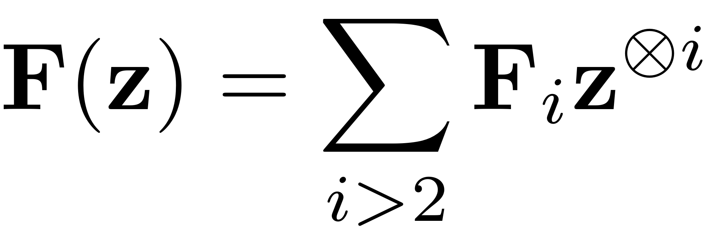
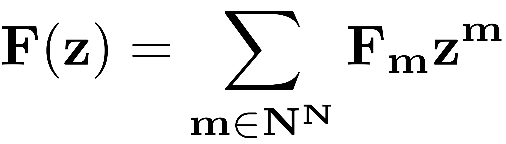

EVALUATE_FNL
function Fnl = evaluate_Fnl(obj,z)
This function evaluates the nonlinearity at input state z in a dynamical system object in the first-order form using either the tensor based

or the multi-index based notation

switch obj.order case 1 Fnl = zeros(obj.N,1); degree = length(obj.F); switch obj.Options.notation case 'tensor' for j = 2:degree % expand_tensor does not support vectorization % Fnl = Fnl + expand_tensor(obj.F{j},z); Fj = tensor_to_multi_index(obj.F{j}); Fnl = Fnl + expand_multiindex(Fj,z); end case 'multiindex' for j = 2:degree Fnl = Fnl + expand_multiindex(obj.F(j),z); end end case 2 [x, xd] = deal(z(1:obj.n,:),z(obj.n+1:obj.N,:)); nt = size(x,2); fnl = obj.compute_fnl(x,xd); Fnl = [-fnl; sparse(obj.n,nt)]; end